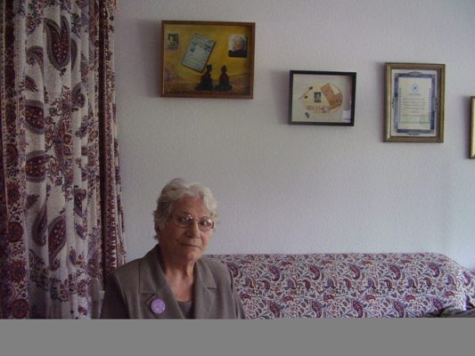

پذيرش > مقالات > همان طور که زندگی جاری است، مبارزه هم جاری است
 گفتگو با راضیه غلامی شعبانی ( ابراهیم زاده ) گفتگو با راضیه غلامی شعبانی ( ابراهیم زاده )

 همان طور که زندگی جاری است، مبارزه هم جاری است همان طور که زندگی جاری است، مبارزه هم جاری است
28 آذر 1387 - گفتگو: خدیجه مقدم - نسخه قابل چاپ
راضیه را اکثر مبارزان قدیمی می شناسند . او یکی از اولین زنان ایرانی است که به خاطر مبارزاتش ، بار ها دستگیر و سال ها زندانی بوده( اولین دستگیری - سال 1325 ) و فرزندش را نیز در زندان به دنیا آورده است . راضیه همسر زنده یاد رضا ابراهیم زاده از گروه موسوم به 53 نفر است که در دوران رضا شاه پهلوی به خاطر عقایدشان دستگیر و زندانی شدند .
راضیه از اولین کسانی است که با امضای بیانیه ، عضو کمپین یک میلیون امضا شد وبه سرعت تعدادی امضا و کمک مالی برای مان فرستاد . او اینک درهشتاد و سه سالگی در شهر دورتموند آلمان با همان شور جوانی ولی با دنیایی از تجربه در آپارتمان کوچکی ، زندگی می کند . فرصتی دست داده تا با ایشان گفتگویی داشته باشم .
س- می خواهید کمی از خودتان برای دوستان کمپینی بگویید ؟
ج- کتاب خاطرات من در ایران چاپ شده . آنجا نوشته ام که در خانواده ی فقیری در تبریز به دنیا آمدم و در شانزده سالگی همرا خانواده برای جستجوی نان و زندگی بهتر به تهران آمدیم و من به طور تصادفی با رضا ابراهیم زاده آشنا شدم و با اینکه چهل سال از من بزرگتر بود به او علاقمند شدم و به میل خودم با او ازدواج کردم و زندگی سیاسی من شروع شد و تا کنون هم ادامه دارد .
س – شما عضو فرقه دموکرات آذربایجان بودید و عکس شما با اسلحه کمری در کتاب هایتان و منزل تان هم دیده می شود آیا فعالیت های گذشته تان را قبول دارید؟

ج – نگاه من به دنیا و به زندگی و مبارزه با گذشته خیلی فرق کرده ، طبیعی هم هست همان طور که زندگی جاری است ، مبارزه هم جاری است . الان شیوه های مبارزه تغییر کرده، ولی من از این عکس ام خوشم می آید چون در هفده سالگی این جوری نشان دادم که هیچ فرقی با مردها ندارم و خودم را ثابت کردم که برابر با مرد هستم و چون از بنیه بدنی قوی ای هم بر خوردار بودم ، هیچ وقت در هیچ زمانی کم نمی آوردم و حتی دیرتر از بسیاری از همراهان مرد خسته می شدم .
س- شما چه طور از فعالیت کمپین با خبر شدید ؟
ج- من این جا با دوستان زیادی در تماس هستم البته از طریق ایمیل و تلفن چون پاهایم زیاد قدرت ندارند که رفت و آمد کنم .دو سال پیش وقتی در سایت ها خواندم که کمپینی به نام یک میلیون امضا ، راه افتاده و دوستان مطالبی را برایم فرستادند و خواندم و دیدم که شما ها هم با کمپین هستید خیلی خوشحال شدم . من پیش از کمپین هم مطالب نوشین احمدی و شادی صدر و پروین اردلان و بقیه را همیشه می خواندم و حتی پرینت می گرفتم و به دیگران هم می دادم یعنی با جنبش زنان ایران از دور همراه بودم و طبیعتن از کمپین بی خبر نمی ماندم . اتفاقن همان اوایل کار کمپین سفری به سوئد داشتم که آنجا کلی امضا جمع کردم و مبلغ مختصری پول که بلافاصله برایتان فرستادم .
س- حرکت زنان ایران را در قالب کمپین چطور می بینید ؟
ج- خیلی حرکت خوب و درستی است ، ببینید فرهنگ سازی خیلی مهم است وقتی خواندم که شما ها با مردم چهره به چهره گفتگو می کنید خیلی ذوق کردم بقیه جنبش ها هم باید از شما یاد بگیرند و به مردم نزدیک شوند . من معتقدم فرهنگ خیلی مهم تر از قانون است ببینید من سی سال در اتحاد جماهیر شوروی زندگی کردم واقعن قانون هیچ فرقی بین زن و مرد نمی گذاشت و بسیار مترقی بود ولی فرهنگ مردسالار حاکم بود . با اینکه زنان تحصیلات بالایی داشتند و به مقام های بالا رسیده بودند اما وقتی به خانه می آمدند اغلب مثل همان زنان سنتی گوش به فرمان شوهرانشان بودند . حتی من می شناسم زنانی را که از شوهرانشان کتک می خوردند و دم نمی زدند ، در حالی که اگر می رفتند و شکایت می کردند، قانون به آنها حق می داد و مرد را مجازات می کرد . حالا اینجا هم اگر یک شبه همه قوانین هم تغییر کند باز سطح جامعه همان خواهد بود این کار فرهنگی که شما می کنید خیلی با ارزش است . جامعه را آماده می کند که وقتی قوانین تغییر کرد زنها بتوانند به راحتی از آن استفاده کنند .
باور کنید اگر تمام کشورهای دنیا هم سوسیالیستی بشوند باز مردسالاری بدون کار فرهنگی از بین نخواهد رفت . ای کاش من هم ایران بودم و در کنار شما فعالیت بیشتری می کردم .
س – چه رهنمودی برای پیشبرد اهدافمان دارید؟
ج- خسته نشوید . آهسته و پیوسته حرکت کنید . با هم هبستگی داشته باشید . مسائل و مشکلاتی را که در این پروسه برایتان پیش می آید بزرگ نکنید به هر چیز به اندازه خودش بها بدهید . نیرو هایتان را سر مسائل کوچک هدر ندهید . در ضمن سعی کنید زندگی شادی هم داشته باشید . از موسیقی غافل نشوید .
بهر حال قدر جوانی تان و قدر همدیگر و لحظه ها را بدانید .
و مهم تر اینکه هشیار باشید تا با تکه پاره کردن جنبش زنان ، ضعیف تان نکنند . خیلی دلم می خواست در ایران کنار شما باشم .
س- چرا به ایران بر نمی گردید ؟ بسیاری از دوستان و رفقا به ایران برگشته اند و زندگی می کنند البته اگر اسمش را زندگی بگذاریم ؟ شما که نباید مشکلی داشته باشید وقتی کتاب تان به صورت قانونی در ایران چاپ شده .
ج – تمام روح و جانم را در ایران جا گذاشته ام و مثل مرغ پر کنده ای اینجا هستم . البته دوستان از سایر کشور ها مرا به اجلاس های مختلفی دعوت می کنند . سال های پیش می توانستم بروم ولی الان خیلی مریض هستم و جایی نمی روم . دوست داشتم می توانستم به ایران بروم و بقیه عمرم را در وطن خودم باشم ولی حیف ...
من یکبار بعد از سی سال به ایران بازگشتم ، بعد از پیروزی انقلاب بود و برایم مثل رویا بود ، بخصوص وقتی گاهی می دیدم در خیابان مرا می شناسند و مردم فراموشمم نکرده اند اشکم سرازیر می شد ، خانه و زندگی ام را در آذربایجان شوروی رها کرده و به کشورم آمده بودم بی هیچ نگرانی ای ، در خانه خواهرم ، دوستانم و اقوامم زندگی می کردم و غمی نداشتم تا مهاجرت دوم . وحالا دیگر پیر شده ام و احتیاج به مراقبت و امکانات دارم ، کشور میزبان من امکاناتی را در اختیارم قرار داده که اگر آنها را نداشته باشم ، زود از پا در می آیم . می خواهم شاهد پیروزی شما باشم .
– امیدوارم سال های سال سلامت باشید ولی اگر به صحبت های قبلی شما برگردیم که حالا حالا ها کار داریم حتی اگر قوانین تغییر کند . تازه با این محدودیت هایی که برای ما ایجاد می کنند معلوم نیست کی امضاها به یک میلیون برسد تا درخواست جمعی مان را به مجلس بدهیم .
ج- اولن با اخباری که من می خوانم مجلس صدای شما را شنیده ، مگر می شود دنیا صدای شما را بشنود ولی مجلس شورای اسلامی بغل گوشتان صدای شما را نشنود ! حالا چه دست هایی در کار است که گاهی حتی عکس خواسته های زنان عمل می شود من نمی دانم . شاید عده ای از نماینده ها یا مسولان دولتی از قدرت زنان می ترسند و می خواهند هر از چندی به خیال خودشان دم زنان را قیچی کنند وبرای همین هم در مقابلشان می ایستند . بهر حال شما اصلن نگران نباشید . امضا هم به عقیده من مهم نیست تا می توانید آموزش بدهید تا آن زن کارگر و روستایی هم خودش را باور کند و انسانی برابر با مرد بداند .
ارسال به
بالاترین
،
توییتر
،
فریندفید
،
فیسبوک
در همين بخش :
 8 مارس روزی که نمی توان از ما دریغ کرد 8 مارس روزی که نمی توان از ما دریغ کرد
با طلاق توافقی از حقارت و کتک و فحش رها شدم /گزارشی از دادگاه محلاتی: مریم مالک
تجمع مادران عزادار در رشت
تغییر ممکن است/ جلوه جواهری(26 روز پس از بازداشت کاوه مظفری)
گامهایی که با تزلزل نا آشنایند/ گرامی داشت چهلم ندا در رشت
ديگر بخش ها :
طرح یک میلیون امضا
|
مقالات
|
سایت نوشته ها
|
اخبار
|
گزارش كمپين
|
گفت و گو
|
علیه سکوت
|
كوچه به كوچه
|
نامه های شما
|
گزارش ویژه
|
گفتگو با اعضا
|
ویژه سالگرد کمپین
|
تصویر برابری
|
دل آرام علی
|
تریبون
|
مقالات
|
تاریخ شفاهی
|
خارج از چارچوب
|
کتابخانه
|
درباره کمپین
|
کمپین در شهرها
|
کمپین در بند
|
صدای تغییر
|
ویژه 22 خرداد
|
لایحه حمایت از خانواده
|
گالری
|
عشا مومنی
|
امیر یعقوبعلی
|
خدیجه مقدم
|
راحله عسگری زاده و نسیم خسروی
|
پروین اردلان،جلوه جواهری، مریم حسین خواه، ناهید کشاورز
|
زینب پیغمبرزاده
|
سعیده امین، سارا ایمانیان، محبوبه حسین زاده، ناهید کشاورز و همایون نامی
|
احترام شادفر
|
نسیم سرابندی زاده،فاطمه دهدشتی
|
وبلاگ مهمان
|
پرونده خرم آباد
|
دستگیری ها
|
مریم مالک
|
پرستو اللهیاری
|
مهرنوش اعتمادی
|
سمیه رشیدی
|
Other Languages
|
همراهان
|
«فراخوان کمپین ده روز با بهاره هدایت»
| English
|